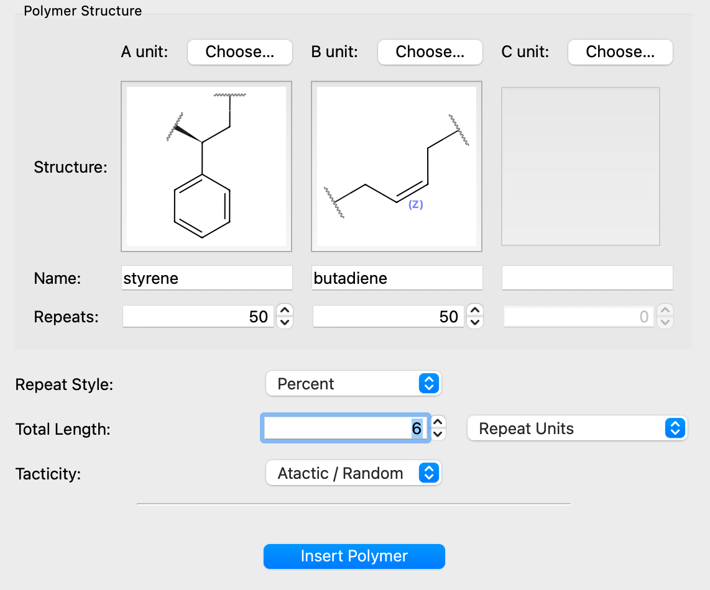
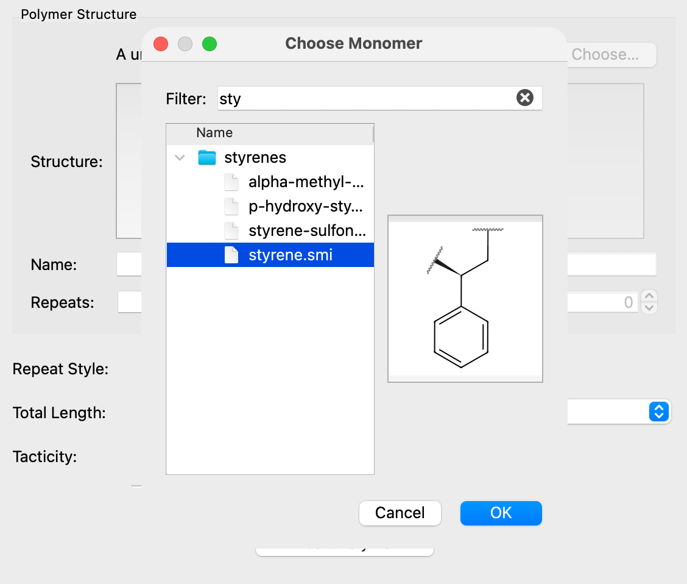
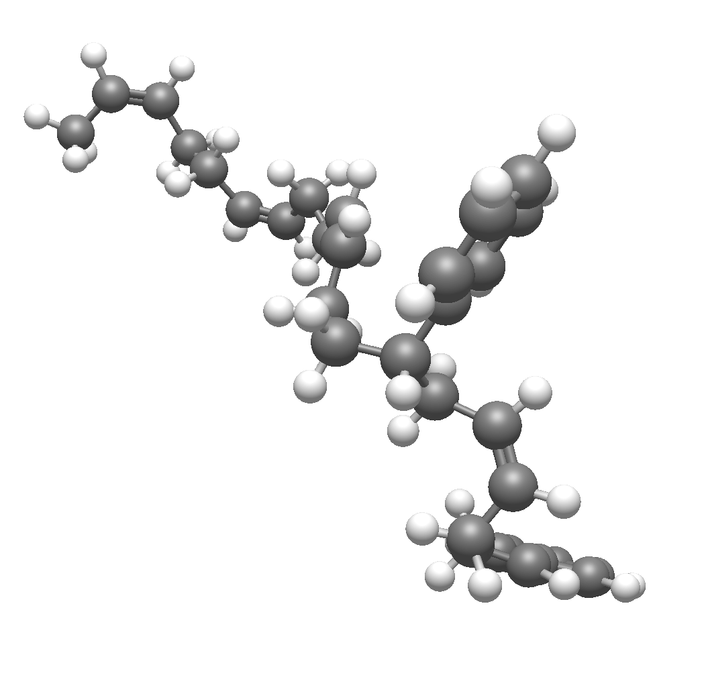

Building Polymers#
Tip
New in 2.1 The Polymer builder is new in version 2.1.
Avogadro has a builder for polymer chains, including homopolymers and block or statistical copolymers of up to three different monomers. This walk-through shows you how to use it.

The Polymer builder is under the Build menu and Insert submenu: Build ⇒ Insert ⇒ Polymer…
Note
The builder generates the 3D structure from a SMILES string, so it needs the SMILES file format, provided by Open Babel. If it isn’t available, Avogadro will warn when you insert the polymer.
Choosing Monomers#
Click Choose… beside A unit to pick the first repeat unit from the monomer library. The chooser lists the monomers by category. Type in the Filter box to narrow the list (e.g., styrene), and select a monomer to see a preview of its structure. Double-click a monomer or click OK to use it.

The name and a depiction of the chosen monomer appear in the dialog.
To build a copolymer, choose a B unit and, if you like, a C unit as well. The B unit can be chosen once the A unit is set, and the C unit once the B unit is set.
Setting the Composition#
The Repeats box under each monomer and the Repeat Style together set how the monomers are arranged along the chain.
- Repeat Units
Build a block copolymer. The Repeats values give the length of each block, and the pattern repeats along the chain. For example, A = 2 and B = 1 gives A–A–B–A–A–B… This is the default.
- Percent
Build a statistical (random) copolymer. The Repeats values give the percentage of each monomer, and each unit is picked at random with those probabilities. Because the sequence is random, inserting the same settings twice gives two different chains.
With the Percent style, the percentages must add up to 100:
With one monomer, A is set to 100%.
With two monomers, changing one value adjusts the other so they add up to 100%.
With three monomers, the values turn red when they don’t add up to 100%, and the polymer won’t be inserted until they do.
Setting the Chain Length#
Total Length sets how long the chain is, in either:
- Repeat Units
The total number of monomer units in the chain.
- Molecular Weight
The approximate molecular weight in g/mol. Avogadro divides this by the average mass of the monomers (weighted by the composition) and rounds to the nearest whole number of repeat units, with a minimum of one.
Note
The monomer masses used for this conversion include the hydrogen atoms that cap each monomer’s attachment points, so the molecular weight of the inserted chain will differ slightly from the value you entered.
Tip
Long chains can take a while to generate in 3D and are slow to optimize. Start with a short chain (e.g., 10–20 repeat units) to check the structure before building a long one.
Setting the Tacticity#
For monomers with a stereocenter (such as propylene or styrene), Tacticity controls the relative stereochemistry along the chain:
- Atactic / Random
Each stereocenter is set at random.
- Isotactic
All stereocenters have the same configuration.
- Syndiotactic
The configuration alternates from one repeat unit to the next.
Tacticity has no effect on monomers without a defined stereocenter.
Inserting the Polymer#
Click Insert Polymer. Avogadro builds the chain, generates its 3D structure and adds it to the current molecule. The ends of the chain are capped with hydrogen atoms.

The new chain is selected and Avogadro switches to the Manipulate Tool, so you can translate and rotate it into position.
The generated geometry is only a starting point. It’s a good idea to optimize the geometry (Extensions ⇒ Optimize Geometry) before using the structure further. See Optimizing Geometry for more information.
See Also#
Building a Polymer Unit Cell – Build a periodic unit cell from a polymer
Building with SMILES – Build molecules from SMILES strings
Building Peptides – Build peptide chains
Manipulation Tool – Move and position the inserted chain